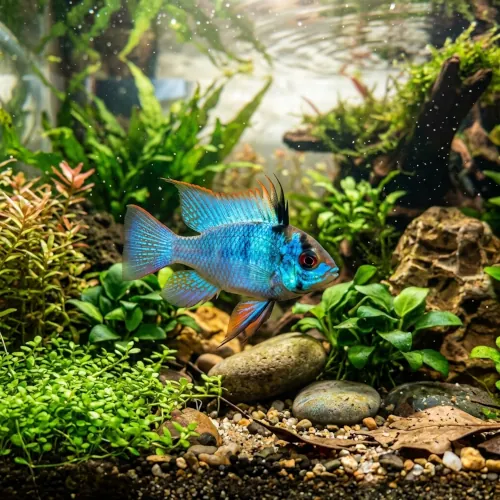

Nome popular principal
Ramirezi Electric Blue
Ramirezi Electric Blue, Ramirezi Azul Elétrico, Electric Blue Ram, Ramirezi Azul
Ficha de peixe
Ciclídeos Anões
Uma das joias mais vibrantes dos aquários plantados, unindo o brilho azul metálico hipnotizante à personalidade inteligente dos ciclídeos anões.

Nome popular principal
Ramirezi Electric Blue, Ramirezi Azul Elétrico, Electric Blue Ram, Ramirezi Azul
Nome científico
Nome técnico essencial para taxonomia, cruzamento de manejo e referência editorial consistente.
Dificuldade de manejo
Use este nível como referência inicial, sempre considerando volume, estabilidade e compatibilidade do aquário.
Seção 1
Seção 2
Seções 4 a 6
Ramirezi Electric Blue tem hábito alimentar onívoro. Excelente. 1 a 2 vezes ao dia. Alimenta-se de grânulos finos que afundam lentamente, aceitando com entusiasmo alimentos vivos e congelados como artêmia, dáfnias e bloodworms.
Machos têm os primeiros raios da nadadeira dorsal mais longos e corpo ligeiramente maior; fêmeas adultas apresentam abdômen mais roliço e tom levemente rosado na barriga. Tipo de reprodução: Ovíparo. Dificuldade de reprodução: Intermediário. Forma casais monogâmicos que depositam os ovos sobre pedras lisas ou folhas largas, revezando-se nos cuidados e na proteção da prole.
Alta. Substrato recomendado: Areia fina de rio com pedras lisas, troncos e plantas. Necessidade de esconderijos: Média. Aprecia aquários densamente plantados com areia fina no fundo, pois possui o hábito natural de peneirar o substrato em busca de alimento.
Seção 7
Por ser uma variedade apurada geneticamente, é ainda mais sensível a oscilações de PH, baixas temperaturas e picos de nitrito ou nitrato.
Seção 8
Exige nível intermediário, pois é sensível à qualidade da água e necessita de aquário bem maturado, água quente (26°C a 30°C) e trocas parciais regulares.
Desenvolve-se melhor em água quente (26°C a 30°C), mole e ácida a neutra, com PH ideal entre 5.8 e 6.8.
Em aquários pequenos (menores que 80-100 litros) não é recomendado, pois disputam território; o ideal é manter apenas um exemplar ou um casal formado.